Visualising Data with ggplot2
Last updated on 2026-11-10 | Edit this page
Overview
Questions
- How do I make plots of my data in R?
- Which kind of plot suits which kind of question?
- How do I make a plot ready to share?
Objectives
- Explain the building blocks of a ggplot: data, aesthetics and geoms.
- Create bar charts, line charts, histograms and box plots.
- Map variables to colour and split plots into panels with facets.
- Add labels, change the theme and save a plot to a file.
The grammar of graphics
ggplot2 builds plots from layers. Every plot needs three things:
- data: a data frame,
-
aesthetics (
aes()): which columns are mapped to the x and y axes, colour, size and so on, - geoms: the type of mark used to draw the data (points, lines, bars…).
Layers are added with +.
R
library(ggplot2)
(As before, start with fennica_clean loaded; see the
previous episode.)
Bar charts: comparing categories
geom_bar() counts the rows in each category for us:
R
ggplot(data = fennica_clean, mapping = aes(x = type)) +
geom_bar()
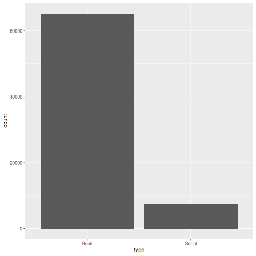
When we have already counted, we use geom_col() and give
the y values ourselves. Here are the ten most common places of
publication:
R
top_places <- fennica_clean |>
filter(!is.na(place)) |>
count(place, sort = TRUE) |>
head(10)
ggplot(top_places, aes(x = n, y = reorder(place, n))) +
geom_col()
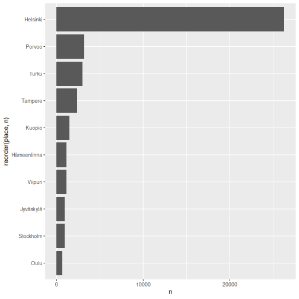
reorder(place, n) sorts the bars by size, which makes
the chart much easier to read. Putting the categories on the y axis
keeps long labels readable.
Line charts: change over time
How did the number of publications develop year by year?
R
per_year <- fennica_clean |>
count(year)
ggplot(per_year, aes(x = year, y = n)) +
geom_line()
WARNING
Warning: Removed 1 row containing missing values or values outside the scale range
(`geom_line()`).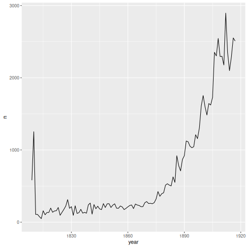
Colour: adding a third variable
By mapping language to colour, we get one
line per language:
R
per_year_language <- fennica_clean |>
filter(language %in% c("Finnish", "Swedish", "Latin", "German")) |>
count(year, language)
ggplot(per_year_language, aes(x = year, y = n, colour = language)) +
geom_line()
WARNING
Warning: Removed 2 rows containing missing values or values outside the scale range
(`geom_line()`).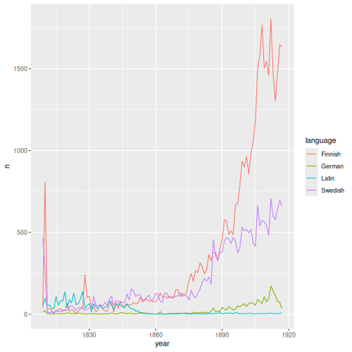
Question every spike
What happened in 1809 and 1810? If we look at the original data, the
column publication_status shows that 1,072 of the 1,186
records dated 1810 have a “Questionable date”. Most of them
come from a digitised collection whose items could only be roughly
dated. The spike says more about cataloguing than about publishing
history. Plots are an excellent way to discover such problems.
Mapping versus setting
Inside aes(), an aesthetic is mapped to a
column: the colour changes with the data. Outside aes(), it
is set to a fixed value for all marks, for example
geom_line(colour = "darkblue", linewidth = 1).
Proportions: stacked bars
To show how the share of each language changed, we can use
stacked bars with position = "fill", which scales every bar
to 100%:
R
fennica_clean |>
mutate(language_group = if_else(
language %in% c("Finnish", "Swedish", "Latin", "German"),
language, "Other")) |>
ggplot(aes(x = decade, fill = language_group)) +
geom_bar(position = "fill")
WARNING
Warning: Removed 12 rows containing non-finite outside the scale range
(`stat_count()`).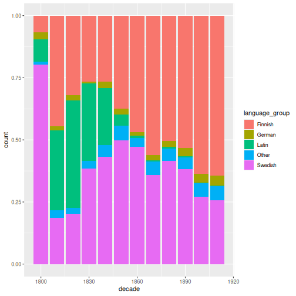
Notice that we can pipe data straight into ggplot().
Distributions: histograms and box plots
A histogram shows how values of a single numeric variable are distributed. How long are titles, in words?
R
ggplot(fennica_clean, aes(x = title_words)) +
geom_histogram(binwidth = 1)
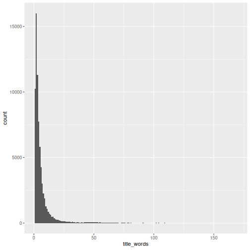
The distribution is very skewed: most titles are short, but a few are extremely long. A logarithmic scale spreads out the values:
R
ggplot(fennica_clean, aes(x = title_words)) +
geom_histogram(bins = 30) +
scale_x_log10()
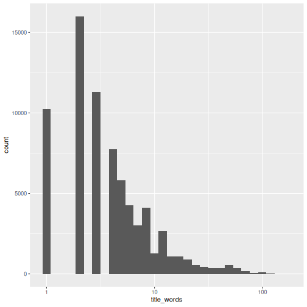
A box plot compares distributions between groups. The thick line is the median, the box covers the middle 50% of the values and points are unusually large values:
R
fennica_clean |>
filter(language %in% c("Finnish", "Swedish", "Latin", "German")) |>
ggplot(aes(x = language, y = title_words)) +
geom_boxplot() +
scale_y_log10()
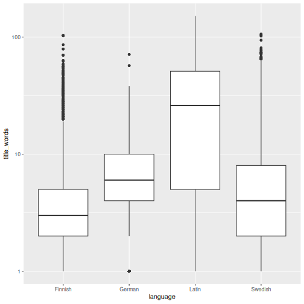
Facets: small multiples
facet_wrap() splits a plot into panels, one per value of
a variable:
R
fennica_clean |>
filter(!is.na(genre)) |>
count(decade, genre) |>
ggplot(aes(x = decade, y = n)) +
geom_line() +
facet_wrap(~ genre, scales = "free_y")
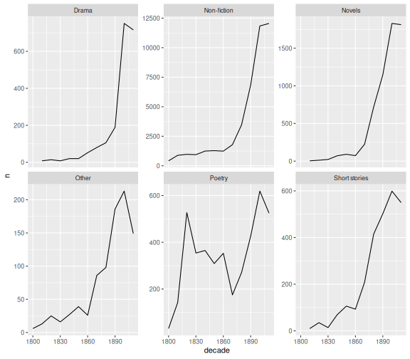
scales = "free_y" gives each panel its own y axis, so
that small genres are not flattened by large ones. But beware: panels
can no longer be compared by height!
Making a plot ready to share
labs() adds titles and axis labels, and themes change
the overall look:
R
language_plot <- per_year_language |>
filter(language %in% c("Finnish", "Swedish")) |>
ggplot(aes(x = year, y = n, colour = language)) +
geom_line(linewidth = 0.8) +
labs(
title = "The rise of Finnish-language publishing",
subtitle = "Publications per year in the Fennica bibliography, 1809–1917",
x = "Year of publication",
y = "Number of records",
colour = "Language"
) +
theme_minimal()
language_plot
WARNING
Warning: Removed 2 rows containing missing values or values outside the scale range
(`geom_line()`).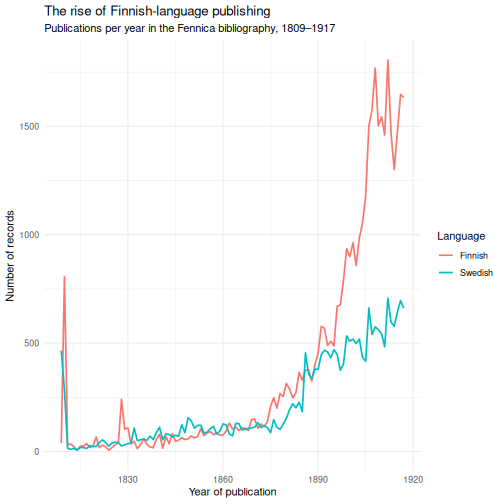
Save a plot to a file with ggsave(). The file type is
taken from the file name:
R
ggsave("finnish_vs_swedish.png", language_plot, width = 8, height = 5, dpi = 300)
R
fennica_clean |>
filter(!is.na(author_birth), !is.na(author_death)) |>
distinct(author, .keep_all = TRUE) |>
mutate(age_at_death = author_death - author_birth) |>
ggplot(aes(x = age_at_death)) +
geom_histogram(binwidth = 5) +
labs(x = "Age at death (years)", y = "Number of authors")
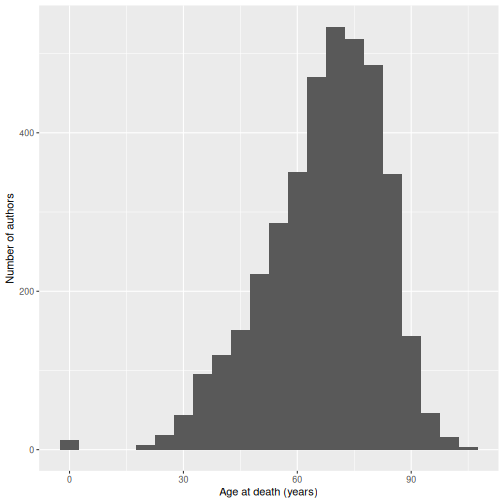
Most authors died in their sixties or seventies. The small bar at zero is a data error in the harmonised author dates: when the raw record only says syntynyt 1875 (“born 1875”), the harmonisation set both the birth and the death year to 1875.
Challenge 2: Fiction over time
Make a line chart showing the number of novels, poetry and drama records per decade, with one coloured line per genre. Add a title.
R
fennica_clean |>
filter(genre %in% c("Novels", "Poetry", "Drama")) |>
count(decade, genre) |>
ggplot(aes(x = decade, y = n, colour = genre)) +
geom_line() +
geom_point() +
labs(title = "Fiction in Fennica by decade",
x = "Decade", y = "Number of records", colour = "Genre") +
theme_minimal()
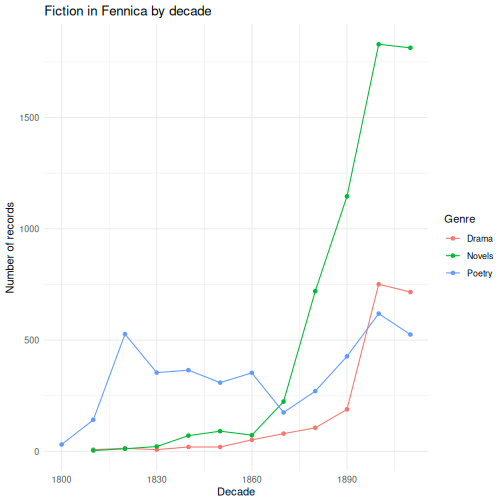
Challenge 3: Improve a plot
The plot below is hard to read. List at least three things that could be improved, then improve it.
R
fennica_clean |>
count(language) |>
ggplot(aes(x = language, y = n)) +
geom_col()
Problems: there are many tiny languages, the labels overlap, the bars are not sorted and the axes have no clear labels. One improvement:
R
fennica_clean |>
count(language, sort = TRUE) |>
head(10) |>
ggplot(aes(x = n, y = reorder(language, n))) +
geom_col() +
labs(x = "Number of records", y = NULL,
title = "The ten most common languages in Fennica, 1809–1917") +
theme_minimal()
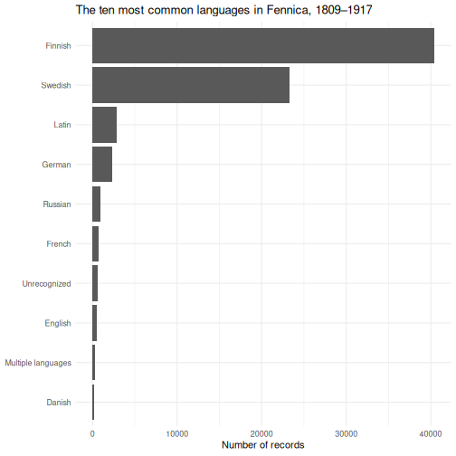
- A ggplot is built from data, aesthetic mappings (
aes()) and geoms, joined with+. - Bar charts compare categories, line charts show change, histograms and box plots show distributions.
- Map a variable to
colourorfill, or usefacet_wrap(), to show more variables. - Sort categories, label axes and choose sensible scales to make plots readable.
- Save plots with
ggsave().